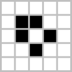
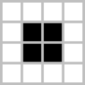
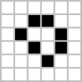
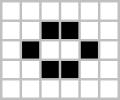
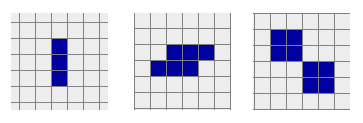
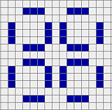
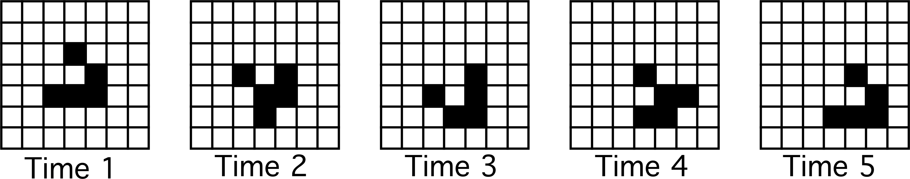

Conway's Game of life rules can be summarised as :
Patterns that occur in the Game of life include:
A pattern which does not change from one generation to the next is known as a still life.
It can also be thought of as an oscilator with unit period.
boat
block
loaf
tub
barge
beehive
A pattern that returns to its original state after a finite number of generations is called an oscillator.
Conway originally believed that no pattern could produce an infinite number of cells, but many counterexamples were found in the end.
If the configuration doesn't move it is called an oscillator, otherwise it is called a glider/spaceship. It is not known whether oscillators of periods 19, 23, 38, 41, 43 and 53 exist, but it is strongly believed that they do.
An interesting fact is that the blinker is the only known one cell thick oscillator.
blinker / toad / beacon
pulsar
A pattern that returns to its initial state after a number of generation but in a different location is called a spaceship.
The speed of a spaceship is given by the number of cells that patterns moves during its period devided by the period length.
Spaceships are most commonly categorized by their speed and direction.
glider
